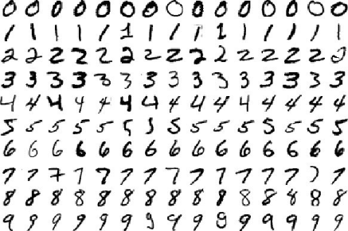
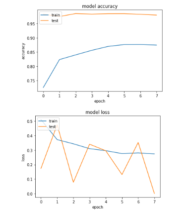

The MNIST database is a large database of handwritten digits. It is perfects for the first attempts with Computer Vision,
because every image is already perfectly cropted - so you don't have to do any preprocessing in advance to clean your dataset.
The main structural feature of RegularNets is that all the neurons are connected to each other. For example, when we have images with 28 by 28 pixels with only greyscale,
we will end up having 784 (28 x 28 x 1) neurons in a layer which seems manageable. However, if we have colored, bigger images it will not be really manageable anymore.
Therefore we decideded to use the architecture of Convolutional Neuronal Networks (CNN's).
The LeNet-5 architecture - a classic CNN architecture, which was introduced in the 1990's.
With the help of a LeNet5 Model we were able to achieve a 99.97 accuracy in the test-data set at a Computer Vision Challenge.
We used Image Augmentation to make our model robust against overfitting.
The example shows a fracture of the dataset. If you want to learn more about the MNIST Database and how to build a model to predict the digits
check out this artictcle by Jason Brownlee.
more
Computer Vision Projects

The cats and dogs database is a dataset from kaggle. In this competition, the task is to write a algorithm that calssifys images that contain either
a dog or a cat.
This Repository originated from a Computer Vision Challenge at linkit, where teams of up to 3 persons had a week to submit predicitons of a test-data set with pictures of cats and dogs.
We achieved a accurracy of 98.18%.
Our Model uses transfer-learning where we froze all layers, except the last 4 of the InceptionResnetV2.
Also we used imagaug a heavy Image Augmentation to make our model more robust.
For more information to our algorithm, check out my GitHub Repository.
more
Natural Language Projects
This is a university course challenge, where we had to build a model that categorize into good or bad reviews.
With Text-Mining techniques we labeled product reviews either as positive or negative.
We did not use any deep learning techniques.
more
Web Development Projects
 This Web-App can be used as a screensaver. It shows a astronomic NASA picture plus title and additional information updated every day.
The Web-App comes in a style like this example. By clicking on the plus
button the additional information will be shown.
The data is recieved via the NASA APOD API
more
This Web-App can be used as a screensaver. It shows a astronomic NASA picture plus title and additional information updated every day.
The Web-App comes in a style like this example. By clicking on the plus
button the additional information will be shown.
The data is recieved via the NASA APOD API
more
This Website should give a quick introduction to some of my projects available on GitHub. This static webpage is build on GitHub-Pages.
It uses the unsplash API to pull a new image every time it will be reloded.
It is build without any framework, just pure HTML, CSS and JavaScript.
more